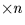
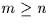
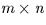
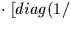
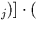
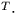

Awhere:x = b
A is a given m (rows)  (columns) matrix, where  x is the n-vector we wish to find, and b is a given m-vectorby means of the Singular Value Decomposition method (SVD).
| M,N | I | m, n, the numbers of rows and columns in matrix A |
|---|---|---|
| MP,NP | I | physical dimensions of array containing matrix A |
| B | D(M) | known vector b |
| U | D(MP,NP) | array containing  matrix U |
| W | D(N) | |
| V | D(NP,NP) | array containing |
| WORK | D(N) | workspace |
|---|---|---|
| X | D(N) | unknown vector x |
A = Uwhere:
A is any m (rows) (columns) matrix, where m > n U is an column-orthogonal matrix W is anNote that m and n are the logical dimensions of the matrices and vectors concerned, which can be located in arrays of larger physical dimensions MP and NP. The solution is then found from the expression:diagonal matrix with
VT is the transpose of an
x = V WUb)
SLALIB --- Positional Astronomy Library